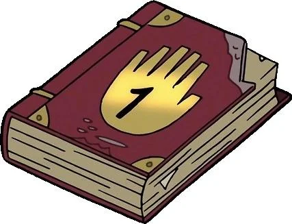
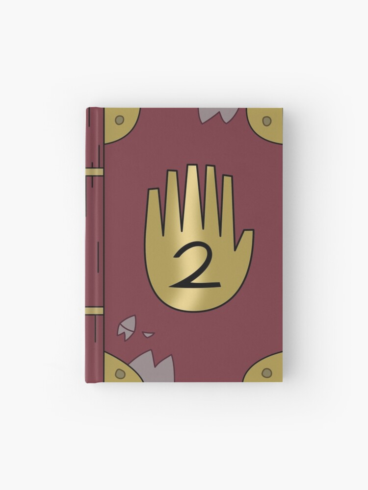

Los Archivos de Gravity Falls
En lo profundo del bosque de Gravity Falls se esconden secretos que muy pocos han descubierto. Los tres diarios originales recopilan años de investigaciones sobre criaturas extrañas, fenómenos inexplicables y portales dimensionales. Ahora puedes explorar estos misterios por ti mismo y descubrir todo lo que ocurre detrás de las sombras del bosque.
Descubrir los diariosLos Diarios

Diario 1
El primer diario reúne registros de criaturas desconocidas y fenómenos extraños observados en Gravity Falls.
$24.99
Comprar diario
Diario 2
Este diario revela secretos del bosque, símbolos antiguos y lugares misteriosos descubiertos en distintas expediciones.
$24.99
Comprar diario
Diario 3
El diario más completo de la colección, con investigaciones sobre anomalías dimensionales y entidades desconocidas.
$24.99
Comprar diarioInvestigaciones registradas
A lo largo de los años se han documentado múltiples fenómenos inexplicables en los alrededores de Gravity Falls. Los diarios recopilan observaciones hechas durante diferentes expediciones y contienen notas sobre comportamientos extraños en el bosque y zonas cercanas al pueblo.
Fenómenos extraños
Varias expediciones han reportado luces, sonidos y movimientos inexplicables durante la noche en el bosque.
Símbolos antiguos
En árboles, rocas y estructuras abandonadas se han encontrado símbolos cuyo significado aún no ha sido identificado.
Criaturas no identificadas
Algunos testigos afirman haber visto figuras y criaturas que no coinciden con ninguna especie conocida.
Notas de campo
Los registros incluyen mapas, observaciones meteorológicas y descripciones detalladas de eventos que ocurrieron en distintas épocas del año. Muchas de estas anotaciones fueron hechas durante exploraciones nocturnas.
Aunque algunos eventos podrían tener explicaciones naturales, otros continúan siendo investigados debido a la falta de evidencia concluyente sobre su origen.